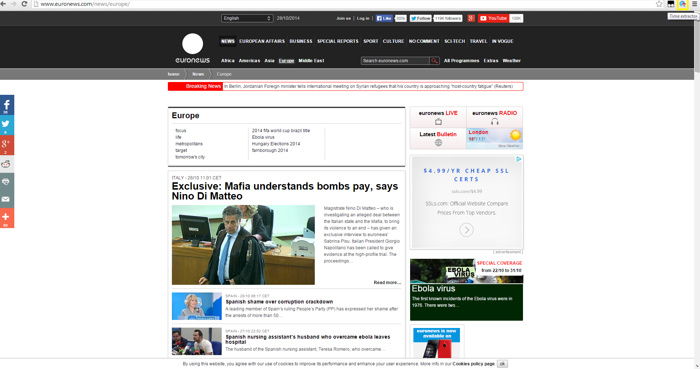
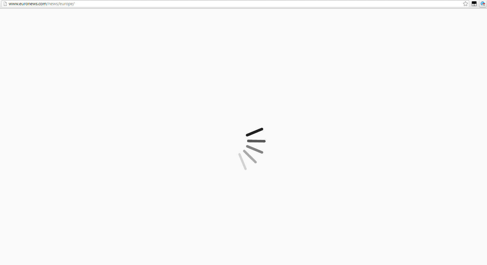
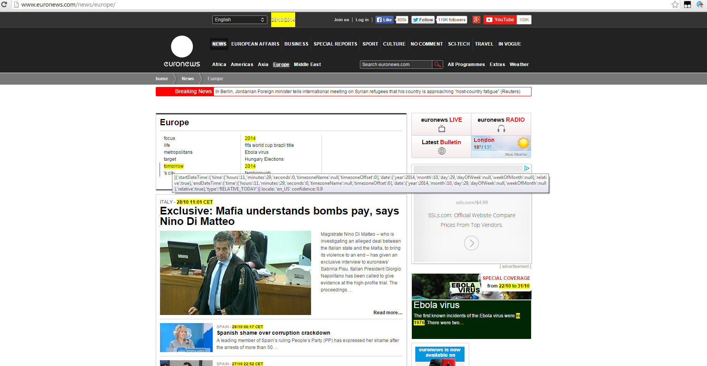
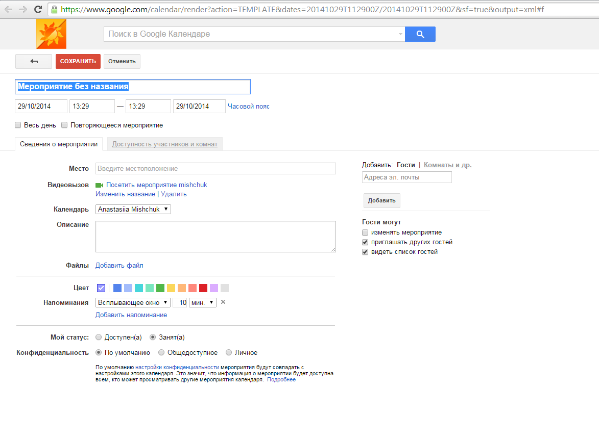
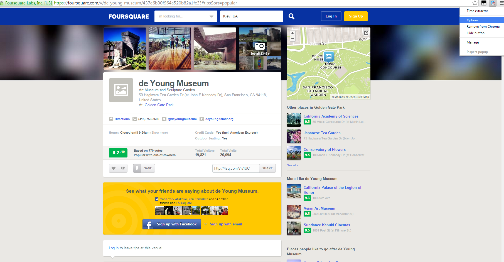
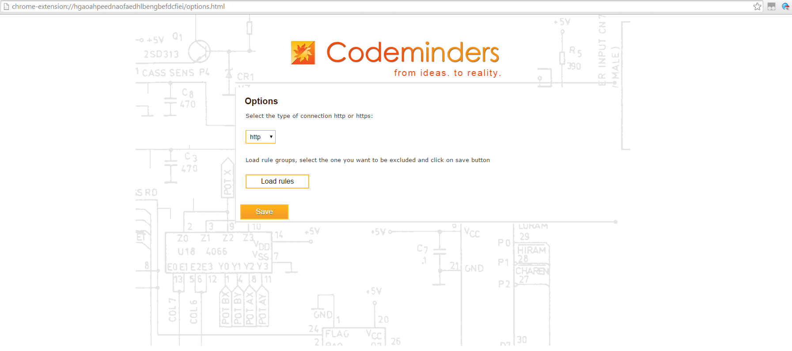
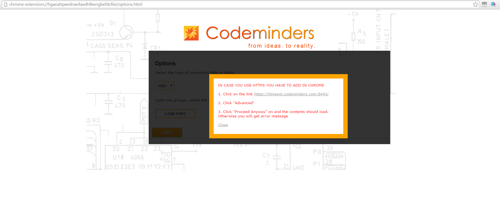
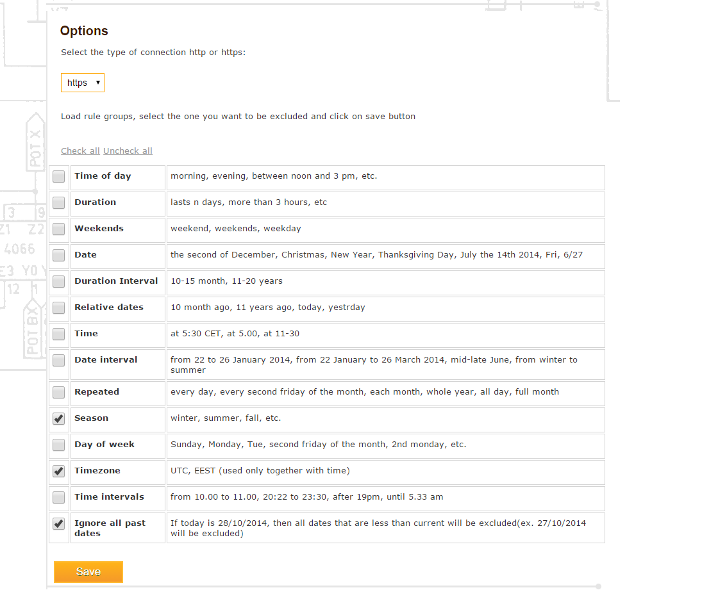
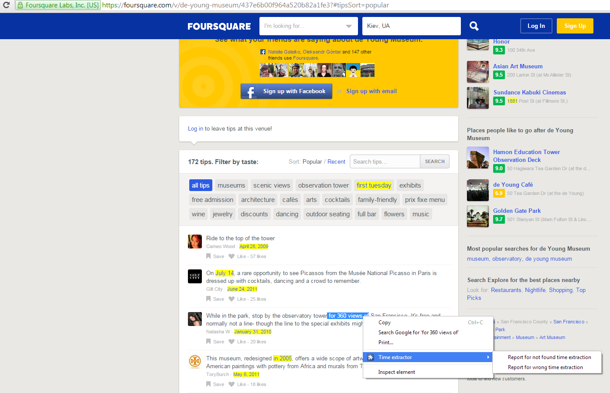

1. Install Time Extractor from Chrome Shop.

2. Select the page on
which you want to use the extension and click on the time
extractor icon.

3. Wait from 0.3 to several seconds
(depends on amount of content on the page), after loading the bar
will disappear.

4. Found text will be highlighted. If you
move mouse on the highlighted element, parsed data will appear as
tooltip. Tooltip contains information about confidence level,
locale, and contains parsed expression (for more details refer to
API information page)

5. If you click on the highlighted text it
will redirect you with following time expression to google
calendar.

6.
If you click second time on the time extractor icon on the same
page, highlighting will be off.
7. If you enter the website with content
loaded over https, you need to change your type of connection to
https. It can be done in options page. Click right mouse button
on the time extractor icon and select Options.

8. On options page you can select
connection type.

When you select https, alert popup will
appear, informing that you need to add Server API address to
trusted websites.

9. Also you can select rules that you want
to be ignored. Firstly, you load rules by clicking on 'Load
rules'. Then, select rules you want to be ignored and click on
'Save' button.

10.
You can help us in improving our service. Just select any text on
the page that you think is wrongly highlighted or that wasn't
highlighted, click on the right button and in content menu select
'Time extractor - Report for not found time extraction ' or 'Time
extractor - Report for not wrong time extraction '


from ideas. to reality.
 Time Extractor User
Guide
Time Extractor User
Guide